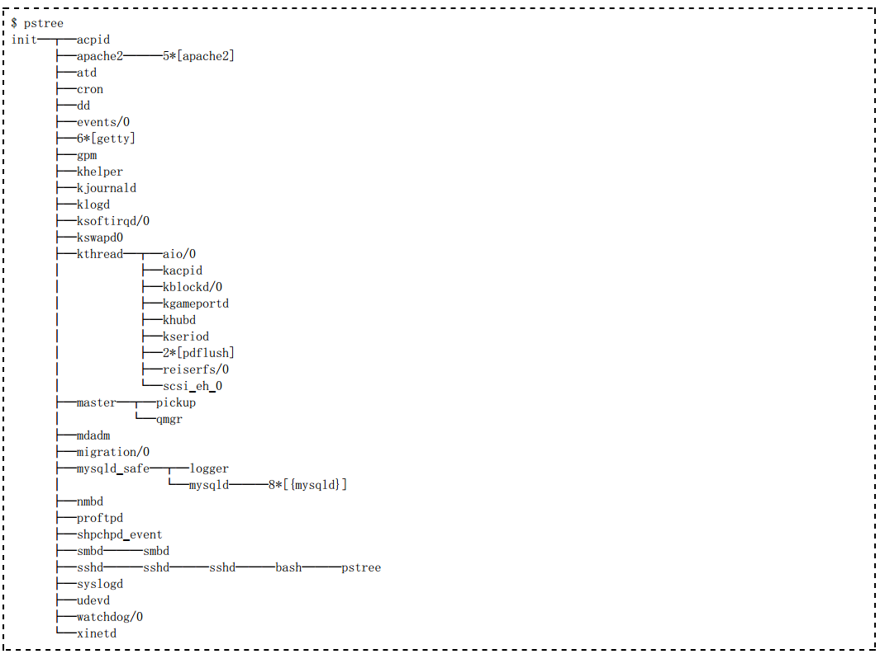
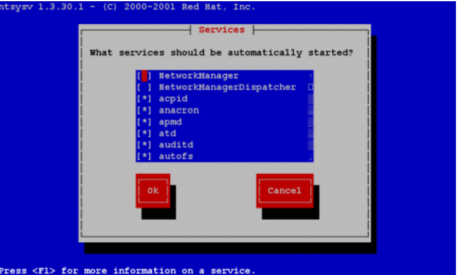
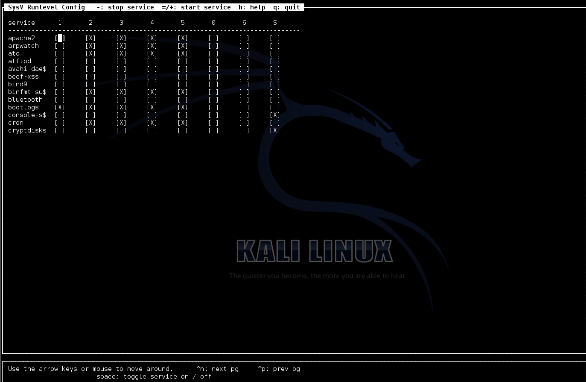
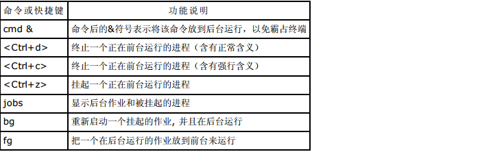

进程（Proce ss）是一个程序在其自身的虚拟地址空间中的一次执行活动。之所以要创建进程，就是为了使多个程序可 以并发的执行，从而提高系统的资源利用率和吞吐量。
进程和程序的概念不同，下面是对这两个概念的比较
- 程序只是一个静态的指令集合；而进程是一个程序的动态执行过程，它具有生命期，是动态的产生和消亡的。
- 进程是资源申请、调度和独立运行的单位，因此，它使用系统中的运行资源；而程序不能申请系统资源、不能被系统调度、也不能作为独立运行的单位，因此，它不占用系统的运行资源。
- 程序和进程无一一对应的关系。一方面一个程序可以由多个进程所共用，即一个程序在运行过程中可以产生多个进程；另一方面，一个进程在生命期内可以顺序的执行若干个程序。
Linux操作系统是多任务的，如果一个应用程序需要几个进程并发地协调运行来完成相关工作，系统会安排这些进程并 发运行，同时完成对这些进程的调度和管理任务，包括CPU、内存、存储器等系统资源的分配。
在Linux系统中总是有很多进程同时在运行，每一个进程都有一个识别号，叫做PID（Proce ss ID），用以区分不同 的进程。系统启动后的第一个进程是init，它的PID是1。init是唯一一个由系统内核直接运行的进程。新的进程可以用 系统调用fork来产生，就是从一个已经存在的旧进程中分出一个新进程来，旧的进程是新产生的进程的父进程，新进程 是产生它的进程的子进程，除了init之外，每一个进程都有父进程。当系统启动以后，init进程会创建login进程等待用 户登录系统，login进程是init进程的子进程。当用户登录系统后，login进程就会为用户启动shell进程，shell进程就 是login进程的子进程，而此后用户运行的进程都是由shell衍生出来的。
init进程是所有进程的发起者和控制者。因为在任何基于Unix的系统（比如linux）中，它都是第一个运行的进程，所以init进程的编号（ProcessID，PID）永远是1。 如果init 出现了问题，系统的其余部分也就随之而垮掉了。
init进程有两个作用。
- 第一个作用是扮演终结父进程的角色。因为init进程永远不会被终止，所以系统总是可以确信它的存在，并在必要的时候以它为参照。如果某个进程在它衍生出来的全部子进程结束之前被终止，就会出现必须以init 为参照的情况。此时那些失去了父进程的子进程就都会以init作为它们的父进程。快速执行一下ps-af 命令，可以列出许多父进程ID（ParentProcessID，PPID）为1的进程来。
- init 的第二个角色是在进入某个特定的运行级别（Runlevel）时运行相应的程序，以此对各种运行级别进行管理。它的这个作用是由/etc/inittab文件定义的
除了进程识别号外，每个进程还有另外四个识别号。它们是实际用户识别号（real user ID）、实际组识别号以及有效 用户识别号（e ffe ct user ID），和有效组识别号（e ffe ct group ID）。实际用户识别号和实际组识别号的作用是 识别正在运行此进程的用户和组。一个进程的实际用户识别号和实际组识别号就是运行此进程的用户的识别号（UID） 和组的识别号（GID）。有效用户识别号和有效组识别号的作用是确定一个进程对其访问的文件的权限和优先权。除了 产生进程的程序被设置UID位和GID位之外，一般有效用户识别号和有效组识别号和实际用户识别号及实际组识别号相 同。如果程序被设置了UID位或GID位，则此进程相应的有效用户识别号和有效组识别号，将和运行此进程的文件的所 属用户的UID或所属组的GID相同。
例如，一个可执行文件/usr/bin/passwd，其所属用户是root（UID为0），此文件被设置了UID位。则当一个UID为500、GID为501的用户执行此命令时， 产生的进程的实际用户识别号和实际组识别号分别是500和501，而其有效用户识别号是0，有效组识别号是501。
所有这些设计都是为了在一个多用户、多任务的操作系统中，所有用户的工作都能够安全可靠地进行，这也是Linux操 作系统的优秀性所在。
可以将运行在Linux系统中的进程分为三种不同的类型：
- 交互进程：由一个Shell启动的进程。交互进程既可以在前台运行，也可以在后台运行。
- 批处理进程：不与特定的终端相关联，提交到等待队列种顺序执行的进程。
- 守护进程：在Linux在启动时初始化，需要时运行于后台的进程。
以上三种进程各有各的特点、作用和不同的使用场合。
启动一个进程有两个主要途径∶手工启动和调度启动。
1、手工启动：由用户输入命令，直接启动一个进程便是手工启动进程。手工启动进程又可以分为前台启动和后台启动。
I .前台启动：是手工启动一个进程的最常用的方式。一般地，用户键入一个命令“ls -l”，这就已经启动了一个进程，而且是一个前台的进程。
II.后台启动：直接从后台手工启动一个进程用得比较少一些，除非是该进程甚为耗时，且用户也不急着需要结果的时候。假设用户要启动一个需要长时间运行的格式化文本文件的进程。为了不使整个shell在耗时进程的运行过程中都处于“瘫痪”状态，从后台启动这个进程是明智的选择。在后台启动一个进程，可以在命令行后使用&命令，例如： # ls –R / >list &
2、调度启动方式是事先进行设置，根据用户要求让系统自行启动。如安排周期性任务
进程 ID（PID)：是唯一的数值，用来区分进程；
父进程和父进程的 ID（PPID)；
启动进程的用户 ID（UID）和所归属的组（GID）；
进程状态：状态分为运行 R、休眠 S、僵尸 Z；
进程执行的优先级；
进程所连接的终端名；
进程资源占用：比如占用资源大小（内存、CPU 占用量）；
进程优先级的范围:-19~20
系统第一个进程是init ，由内核启动，后续的所有进程都是她的子进程
一般用户的nice值是0～19
?root用户可用的nice值是-20～19
PRI是系统动态决定的，虽然 nice值可以影响PRI，但是最终的PRI还是要经过系统分析后才能决定。
nice 值可以被改变……
?在启动进程时:
$ nice -n 5 command
在启动后：
$ renice 5 PID
只有根用户才能降低nice值（提高优先性）
他们的关系是管理和被管理的关系，当父进程终止时，子进程也随之而终止。但子进程终止 ， 父进程并不一定终止。比如 httpd 服务器运行时，我们可以杀掉其子进程，父进程并不会因 为子进程的终止而终止。
内容提要
Linux 系统在启动时就启动很多进程（例如：init 进程、等待用户登录的进程 login、等待 FTP 客户连接的 vsftpd 等），这 些进程向本地和网络用户提供了 Linux 的系统功能接口，直接面向应用程序和用户。将这些进程称为守护进程（daem on）。 守护进程是指在后台运行而又没有终端或登录 shell 与之结合在一起的进程。由于此类程序运行在后台，除非程序异常终止或者人 为终止，否则它们将一直运行下去直至系统关闭。一般地，守护进程在系统引导装入时启动，在系统关闭时终止。一个实际运行中 的系统一般会有多个这样的守护进程在运行。Windows 系统中的守护进程被称为“服务”。
按照服务类型可以分为如下两类：
- 系统守护进程：如 a td、cron、lpd、syslogd、login 等。
- 网络守护进程：如 sshd、httpd、sendm ail、xine td 等。
在 Client/Server 模型中，服务器监听（Listen）在一个特定的端口上等待客户的连接。连接成功之后客户机与服务器通过端口 进行数据通讯。
守护进程的工作就是打开一个端口，并且等待（Listen）进入的连接。如果客户提请了一个连接，守护进程就创建（fork）子进 程来响应此连接，而父进程继续监听更多的服务请求。正因为如此，每个守护进程都可以处理多个客户服务请求。
运行 Linux 的计算机一般都作为服务器使用，提供了许多不同协议的服务。但是，一台繁忙的服务器也可能是专用于某个任务 的，比如传输邮件、响应 DNS 请求等。
从守护进程的概念，我们可以看出，对于系统所要提供的每一种服务，都必须运行一个监听某个端口连接发生的守护程序。无论如 何，在提供多种服务的 Linux 系统中，系统内存中同时运行二、三十种不同的守护进程是对资源的浪费。解决这个问题的方法是 使用超级服务器 （SuperServer）。
几乎所有的类 UNIX 系统都运行了一个“超级服务器”，它为众多服务创建套接字（Socke t），并且使用 Socke t 系统调用同时 监听多个端口。当远程系统请求一个服务时，超级服务器监听到这个请求后会产生该端口的服务器程序为客户提供服务。 使用最广泛的超级服务器程序是 xinetd ，即“扩展网络守护进程”。
xinetd 在运行时读取 /etc 下文本配置文件，在文件中指出超级服务器需要监听的端口以及在数据包到达端口时需要启动的程 序。 xinetd 具有更先进的配置模式和更好的安全性。
由于引入了超级服务器，因此守护进程有如下两种运行方式：
1、独立运行的（stand-alone）守护进程
- 独立运行的守护进程由 init 脚本负责管理
- 独立运行的守护进程的脚本存放在 /e tc/init.d/ 目录下
- 所有的系统服务都是独立运行的。如：cron、syslogd 等。
2、由超级服务器（SuperServer）运行的守护进程
- 要运行的守护进程由 ine td/xine td 启动
- 由 xine td 管理的守护进程的配置文件存放在 /e tc/xine td.d/ 目录下, 默认的 xine td 的主配置文件是/etc/xine td.conf
- ine td/xine td 本身是独立运行的守护进程
为了节省资源，引入了超级服务器用于监控网络服务，如 telne t、talk 等。使用超级服务器启动网络服务虽然可以节省资源，但 是对于服务量很大的守护进程（如 HTTP服务、FTP服务）将影响到其他服务的运行，同时也影响所提供服务的响应速度。为此， 某些常用的知名网络服务的守护进程需要单独启动。
哪些守护进程可以使用超级服务器启动？
几乎所有的网络服务程序都可以由超级服务器来启动，而具体提供哪些服务将由 /e tc/service s 文件指出。这个文件中说明了超 级服务器可提供服务的端口号和名字。
可以使用 pstree 命令查看守护进程树。例如：
1、独立运行的守护进程的启用和停止
1)/etc/init.d/server-name start|stop|restart|reload
2)service server-name start|stop|restart|reload
2、由超级服务器运行的守护进程的启用和停止
1)修改 /etc/xine td.d/ 目录下的相关文件
- 启用服务，使用 disable = no 选项
- 停用服务，使用 disable = yes 选项
2)重新启动超级服务器
# /etc/init.d/xinetd restart
# service xinetd restart
3、使用 chkconfig 管理启动脚本
可以使用 chk config 命令检查、设置系统的各种服务。此命令实际上是通过操控 /etc/rc[0-6].d 目录下的符号链 接文件对系统的各种服务进行管理。
可以使用 chk config 命令检查、设置系统的各种服务。此命令实际上是通过操控 /etc/rc[0-6].d 目录下的符号链 接文件对系统的各种服务进行管理。
chk config 命令具有如下功能：
添加指定的新服务
清除指定的服务
显示由 chk config 管理的服务
改变服务的运行级别
检查指定服务的启动状态
chk config 命令的格式如下：
# chkconfig –list [server-name]
# chkconfig –add server-name
# chkconfig –del server-name
# chkconfig [–level <levels>] server-name <on|off|reset|resetpriorities>
其中：
server-name：是由 chk config 命令管理的服务的名字。
–list：显示由 chk config 管理的所有服务。
–level <levels>：指定某服务要在哪个运行级别中开启或关闭，<levels> 的范围在 0-6 之间。
–add：添加由 chk config 进行管理的指定服务。
–del：删除由 chk config 进行管理的指定服务。
on|off：在指定的运行级别，开启或关闭服务。不指定运行级别时，默认的运行级别是 3、4、5。
reset：在指定的运行级别，重置该服务，使其状态返回到操作系统启动时的默认状态。
例如：
1)查看指定的服务在所有运行级别的运行状态。
# chkconfig –list sendmail
)显示由 chk config 管理的所有服务。
# chkconfig –list
3)添加一个由chk config管理的服务。
# chkconfig –add httpd
4)更改指定服务在指定运行级别的运行状态。
# chkconfig –level 35 httpd on
# chkconfig httpd on
# chkconfig –level 4 sendmail off
5)启动或停用由 xine td 运行的服务
# chkconfig rsync on # 相当于配置文件中的 “disable = no”
# chkconfig rsync off # 相当于配置文件中的 “disable = yes”
若要管理守护进程在计算机启动过程中是否启动，Redhat系列操作系统可以使用 ntsysv。
执行如下命令运行 ntsysv：
# ntsysv
使用 ntsysv 管理开机时守护进程的的启用状态
可以使用上下方向键移动光标选择操作对象，使用空格键激活或终止服务（[*]表示激活；[ ]表示终止）。操作结束单 击“确定”按钮结束（也可以单击“取消”按钮取消操作）。这样在下次启动机器时，修改将生效。
Debian系列操作系统可以使用sysv-rc-conf
#sysv-rc-conf
作业控制是指控制当前正在运行的进程的行为，也称为进程控制。作业控制是Shell的一个特性，使用户能在多个独立进 程间进行切换。例如，用户可以挂起一个正在运行的进程，稍后再恢复它的运行。bash记录所有启动的进程并保持对所 有已启动的进程的跟踪，在每一个正在运行的进程的生命期内的任何时候，用户可以任意地挂起进程或重新启动进程恢 复运行。
例如，当用户使用Vi编辑一个文本文件，并需要中止编辑做其他事情时，利用作业控制，用户可以让编辑器暂时挂起， 返回Shell提示符开始做其他的事情。其他事情做完以后，用户可以重新启动挂起的编辑器，返回到刚才中止的地方，就 像用户从来没有离开编辑器一样。这只是一个例子，作业控制还有许多其他实际的用途。
下表列出了作业控制的常用命令或操作快捷键。
这些命令经常用于用户需要在后台运行，而却意外地把它放到了前台启动运行的时候。当一个命令在前台被启动运行 时，它会禁止用户与Shell的交互，直到该命令结束。由于大多数命令的执行都能很快完成，所以一般情况下不会有什么 问题。但是如果要运行的命令要花费很长时间的话，我们通常会把它放到后台，以便能在前台继续输入其他命令。此 时，上面的命令就会派上用场了。
在进行作业控制时经常使用如下的作业标识符：
下面举一个简单的例子说明作业控制命令的使用。
# 列出所有正在运行的作业
$ jobs
# 在前台运行睡眠进程
$ sleep 100000
# 使用Ctrl+z挂起
[1]+ Stopped sleep 100000
# 在前台运行睡眠进程
$ sleep 200000
# 使用Ctrl+z挂起
[2]+ Stopped sleep 200000
# 在后台运行睡眠进程
$ sleep 300000 &
[3] 8941
# 运行cat命令
$ cat >example
This is a example.
# 使用Ctrl+z挂起
[4]+ Stopped cat >example
# 列出所有正在运行的作业
# 第1列是作业号，第2列中的+表示默认作业；-表示第二默认作业，第3列是作业状态
$ jobs
[1] Stopped sleep 100000
[2]- Stopped sleep 200000
[3] Running sleep 300000 &
[4]+ Stopped cat >example
# 列出所有正在运行的作业，同时列出进程PID
$ jobs -l
[1] 8939 Stopped sleep 100000
[2]- 8940 Stopped sleep 200000
[3] 8941 Running sleep 300000 &
[4]+ 8942 Stopped cat >example
# 将第二默认作业（以-标识）在后台继续运行
$ bg %-
[2]- sleep 200000 &
$ jobs -l
[1]- 8939 Stopped sleep 100000
[2] 8940 Running sleep 200000 &
[3] 8941 Running sleep 300000 &
[4]+ 8942 Stopped cat >example
# 将1号作业在后台继续运行
$ bg %1
[1]- sleep 100000 &
$ jobs -l
[1] 8939 Running sleep 100000 &
[2] 8940 Running sleep 200000 &
[3]- 8941 Running sleep 300000 &
[4]+ 8942 Stopped cat >example
# 将默认作业（以+标识）在前台继续运行
# fg 等同于 fg %+；bg 等同于 bg %+
$ fg
cat >example
# 使用Ctrl+d结束进程
$ jobs -l
[1] 8939 Running sleep 100000 &
[2]- 8940 Running sleep 200000 &
[3]+ 8941 Running sleep 300000 &
# 杀死 1号作业
$ kill %1
$ jobs -l
[1] 8939 Terminated sleep 100000
[2]- 8940 Running sleep 200000 &
[3]+ 8941 Running sleep 300000 &
# 杀死默认作业（以+标识）
$ kill %+
$ jobs -l
[2]- 8940 Running sleep 200000 &
[3]+ 8941 Terminated sleep 300000
我们常常有这样的需求：想退出secureCRT后，能够继续跑自己的进程。为什么会有这样的需求？作为系统管理员，经常遇到这样的问题，用 telnet/ssh 登录了远程的 Linux服务器，需要运行了一些耗时较长的任务，例如批量ping一些网段之类， 有时候却由于网络的不稳定导致任务中途失败，或者需要中途离开，总不会在等它结束吧，如果你退出SSH登陆的话，那么你的任务也会被终止了，岂不是白费精。力了？如何让命令或者任务在后台自己的运行，可以有很多方式实现，向大家都不陌生了，例如nohup，setsid和screen等等，我就简单说说吧。
在我们通过SSH登陆服务器后，一般来说，所做的操作或者命令的输入都是属sshd下的shell的子进程，例如打开个SSH终端，输入ping www.163.com >>output.txt &，然后查看进程情况：
$ ps -ef|grep ping
sszheng 27491 27467 0 10:20 pts/0 00:00:00 ping www.163.com
sszheng 27535 27467 0 11:40 pts/0 00:00:00 grep ping
很显然它是shell的子进程，命令由一个子shell在后台执行，当前shell（27467）立即取得控制等候用户输入，所以我的grep就可以使用了。后台命令和当前shell的执行是并行的，他们没有互相的依赖、等待关系，所以是异步的并行。现在问题来了，如果ssh退出了，bash结束了，那么这个工作过程如何呢？后台执行的能否继续下去？
这里涉及到两个问题，就是退出ssh后，在我们exit执行的shell时候，会不会向我们后台的jobs发送SIGHUP信号呢？ 如果发送了SIGHUP信号，那么所有该shell下运行的进程都会被终止，也就是所希望的后台执行没有实现。在shell的options中，有huponexit这个选项，意思就是退出shell时候，是否发送这个SIGHUP信号？
$ shopt
cdable_vars off
cdspell off
checkhash off
checkwinsize off
cmdhist on
dotglob off
execfail off
expand_aliases on
extdebug off
extglob off
extquote on
failglob off
force_fignore on
gnu_errfmt off
histappend off
histreedit off
histverify off
hostcomplete on
huponexit off
interactive_comments on
lithist off
login_shell on
mailwarn off
no_empty_cmd_completion off
nocaseglob off
nocasematch off
nullglob off
progcomp on
promptvars on
restricted_shell off
shift_verbose off
sourcepath on
xpg_echo off
上面的默认选项中，huponexit off，这个情况时候，当你退出shell时候，后台的程序还会继续运行，但是这个是全局选项，有时候我们往往希望退出shell后，shell发起的进程相应结束了，而不是一直运行，因为有时候你可能开了很多子进程，没有时间去一一关闭吧？？往往这个选项是建议打开的。
huponexit打开后，所以后台进行的jobs，在shell退出后就会相应退出了，但是针对我们特定的任务时候，我们可以对它进行单独操作，可以有下面集中方法。
1、nohup
nohup的用途就是让提交的命令忽略 hangup 信号，使用方法：
$nohup ping www.163.com & 如果没有重定向输入和输出的话，标准输出和标准错误缺省会被重定向到 nohup.out 文件中。一般像示例一样，加上”&”来将命令同时放入后台运行，也可用”>filename 2>&1”来更改缺省的重定向文件名。退出shell后，ping会继续运行，直到命令执行结束。
$ ps -ef |grep ping
sszheng 5377 5311 0 16:51 pts/1 00:00:00 ping www.163.com
sszheng 5379 5311 0 16:51 pts/1 00:00:00 grep ping
退出shell后，重新登陆查看，ping进程依然在执行，只不过他的PPID变成了1，也就是被init所管理的孤儿进程了，稍后说一下孤儿进程。
$ ps -ef |grep ping
sszheng 5377 1 0 16:51 ? 00:00:00 ping www.163.com
sszheng 5389 5383 0 16:52 pts/0 00:00:00 grep ping
2、setsid
nohup是通过忽略 HUP信号来使进程避免中途被中断，也可以用另一种方法，进程是不属于接受 HUP 信号的终端的shell子进程，那么自然也就不会受到 HUP 信号的影响了，真是白猫黑猫，抓到老鼠就是好猫，呵呵，废话多了
shell提供了setsid这个方法
$setsid ping www.163.com & >>163.txt
$ ps -ef |grep ping
sszheng 5377 1 0 16:51 ? 00:00:00 ping www.163.com
sszheng 5395 1 0 16:56 ? 00:00:00 ping www.163.com
sszheng 5397 5383 0 16:57 pts/0 00:00:00 grep ping
大家应该注意到，上一个示例中，ping的父进程是5311，当它的父进程退出后，它才被init（PID=1）收养，而setsid直接把ping(pid=5395)给init了，那么就无所谓的shell退出影响了。
3、(&)
再提一下关于subshell的使用，我们知道，将一个或多个命名包含在“()”中就能让这些命令在子 shell 中运行中，当我们将”&”也放入“()”内之后，我们就会发现所提交的作业并不在作业列表中，也就是说，是无法通过jobs来查看的。看看下面的进程id就知道了：
$（ping www.163.com &）
$ ps -ef |grep ping
sszheng 5377 1 0 16:51 ? 00:00:00 ping www.163.com
sszheng 5395 1 0 16:56 ? 00:00:00 ping www.163.com
sszheng 5401 1 0 17:03 pts/0 00:00:00 ping www.163.com
sszheng 5403 5383 0 17:03 pts/0 00:00:00 grep ping
可以看到，执行的5401的父进程是init了，这样子也可以达到忽略hup信号的目的了。
说到这里，相信大家都略明白后台执行的方法了，简单说下原理：bash进程终止后，init进程会接管父进程留下的这些“孤儿进程”，所以PPID是1了，孤儿进程不是僵尸进程，下面是他们的概念和区别
- 僵尸进程：一个子进程在其父进程还没有调用wait()或waitpid()的情况下退出。这个子进程就是僵尸进程。
- 孤儿进程：一个父进程退出，而它的一个或多个子进程还在运行，那么那些子进程将成为孤儿进程。孤儿进程将被init进程(进程号为1)所收养，并由init进程对它们完成状态收集工作。